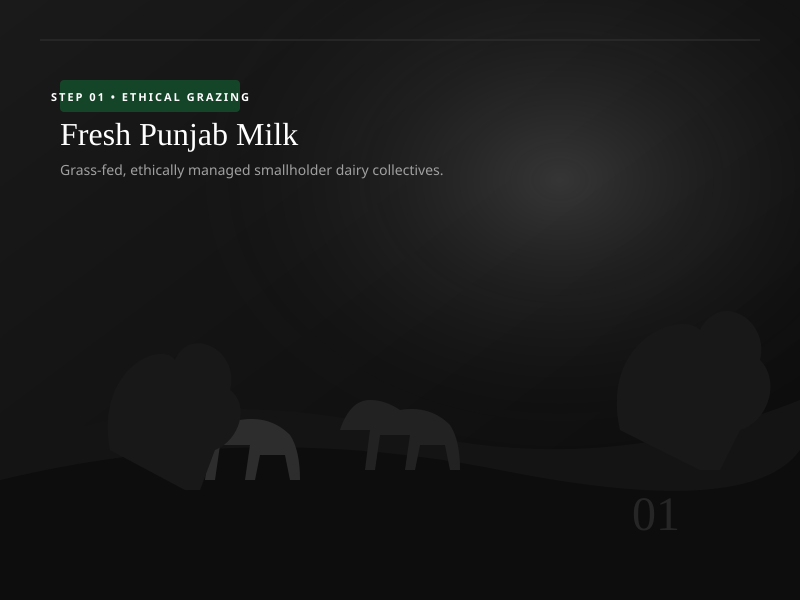

STEP 01 • ETHICAL DAIRY SOURCING
Fresh Punjab Dairy
We partner directly with smallholder dairy farmer collectives across the fertile Punjab basin. Cattle graze on seasonal green fodder (berseem, sorghum, natural grasses) with zero commercial hormones or synthetic fattening feeds.